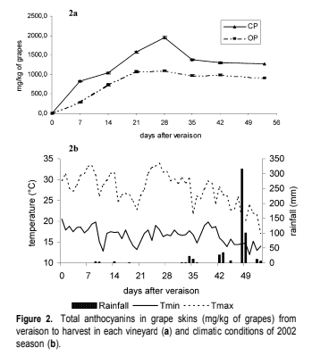

He analitzat en l'activitat de recerca d'informació si el raïm ecològic té més nutrients que el convencional, per fer-ho he anat a Google acadèmic i he escrit en el buscador "grape conventional ecologic" i he trobat un article científic que estudía quin es millor. L'article és Vian et al, 2010 i estudía com durant el procés de maduració del raïm Syrah és fabriquen compostos que donen color, sabor i propietats saludables al vi que s'anomenen antocianines i si són diferents quan es cultiven o no.
A continuació pots veure una imatge on es mostren els resultats:
